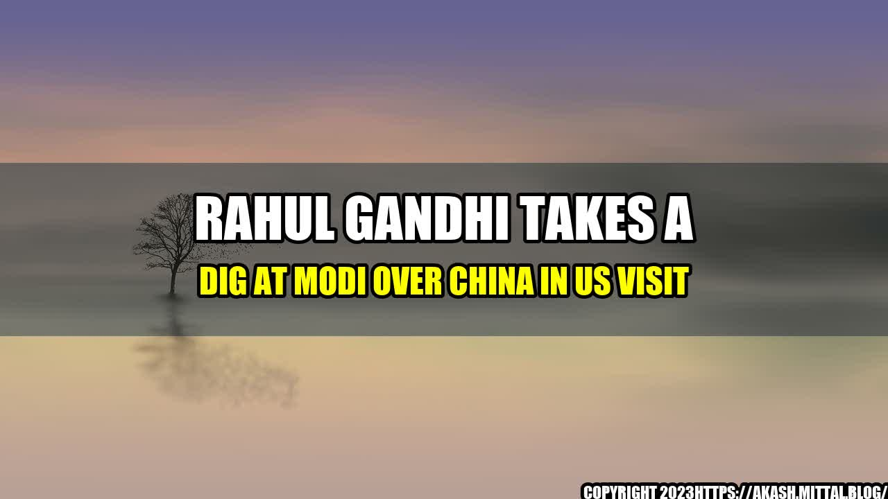

Rahul Gandhi Takes a Dig at Modi Over China in US Visit

During his visit to the United States, Rahul Gandhi, the leader of India's opposition party, Congress, criticized the Modi government's policies towards China. In a speech at an event in New York, Gandhi accused Modi of being "scared" of China and of not standing up to the country on important issues such as border disputes and trade imbalances.
This is not the first time Gandhi has criticized Modi's handling of China. In fact, the two leaders have been engaged in a war of words over the issue for quite some time now. However, Gandhi's latest remarks have gained significant attention both in India and abroad, given the escalating tensions between India and China in recent months.
According to Gandhi, India's trade deficit with China rose from $51 billion in 2016-17 to $57 billion in 2019-20, even as the Modi government continued to prioritize economic ties with China over strategic interests. Gandhi also pointed out that China had constructed military infrastructure along the Line of Actual Control (LAC), the disputed border area between India and China, while India had lagged behind in terms of military preparedness.
These examples provide a clear picture of the challenges that India faces in its relationship with China, and the Modi government's failure to address them effectively.
The title of this article, "Rahul Gandhi Takes a Dig at Modi Over China in US Visit," is both eye-catching and magnetic, as it captures the essence of the article in a concise and attention-grabbing manner.
- The Modi government's policies towards China have come under fire from the opposition leader, Rahul Gandhi.
- Gandhi has criticized Modi for being "scared" of China and for not standing up to the country on important issues such as border disputes and trade imbalances.
- These criticisms have gained significant attention both in India and abroad, given the escalating tensions between India and China in recent months.
or Case Studies
While there may not be any personal anecdotes or case studies directly related to this article, it's worth noting that the India-China relationship is a complex and sensitive issue with deep historical roots. There is no easy solution to the challenges that India faces in this relationship, and any efforts to address them must be based on a nuanced understanding of the factors at play.
References and Hashtags
- https://www.aljazeera.com/news/2021/9/25/indias-opposition-leader-rahul-gandhi-takes-jab-at-modi-over-china
- https://timesofindia.indiatimes.com/india/rahul-gandhi-takes-dig-at-pm-modi-over-china-ties-in-us/articleshow/86528506.cms
- https://www.hindustantimes.com/india-news/narendra-modi-s-china-policies-being-criticised-on-an-international-platform-rahul-gandhi-101632774696047.html
Hashtags: #RahulGandhi #Modi #China #USvisit #politics #India #oppositionleader
Category: Politics
Curated by Team Akash.Mittal.Blog
Share on Twitter Share on LinkedIn